Kos - Rand Centrum
Mylos Beach Bar ligt aan het strand bij Kos-stad en is een beachbar waar cocktails een belangrijk onderdeel van de kaart zijn. Overdag is het een plek voor drankjes en strandbezoek, terwijl het in de avond drukker wordt voor cocktails en muziek. De bar trekt je als toerist aan, en ook locals, door de ligging aan zee.

Wat veel mensen hier speciaal komen doen, zijn de cocktails. Ze staan bekend om hun creatieve en energizing cocktails. De mixologen maken frisse, goed gebalanceerde drankjes met mooie presentatie. Of je nu kiest voor een klassieke mojito, een sprankelende gin-tonic of een van hun signature cocktails – ze zijn meestal lekker sterk en smaakvol.
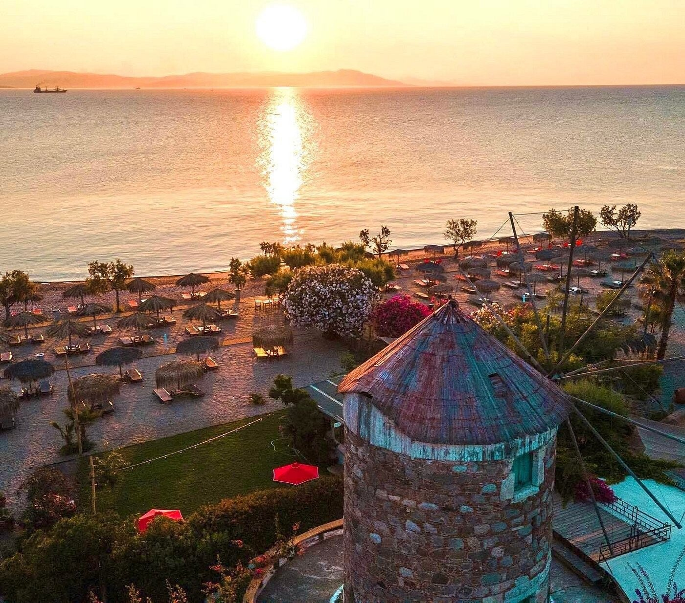
Mylos Beach Bar op Lambi Beach, vlakbij Kos-stad is één van de iconische spots voor stappen en feesten op het eiland.
Overdag
Overdag een relaxte boho-chic beach hangout met sunbeds, cocktails en chill muziek
overdag chill je er met cocktails en boho-vibes op sunbeds aan het strand,
De beste stranden in Kos? Bezoek zeker Mylos Beach Bar, gelegen op het idyllische Lambi Beach vlakbij Kos-stad. Een echte trendy en hippe strandtent boho-chic hotspot. Het strand bestaat uit zand en kiezelstenen. is het water helder turquoise en een heerst er een relaxte vibe.
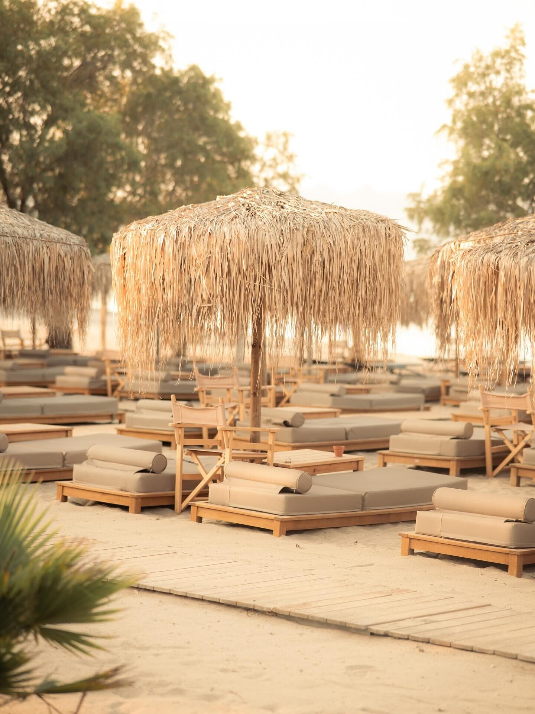
Overdag is het perfect voor zonnebaden, zwemmen en cocktails drinken met uitzicht op zee. 's Avonds tovert Mylos zich om tot een bruisende beach bar, waar veel locals samenkomen voor een levendige sfeer. De zaak wordt dan een echte party spot met goede muziek, chill-out beats, die overgaan in energieke sets. Er zijn regelmatig optredens van bekende DJ's, wereldberoemde namen, populaire Griekse artiesten of alternatieve bands.
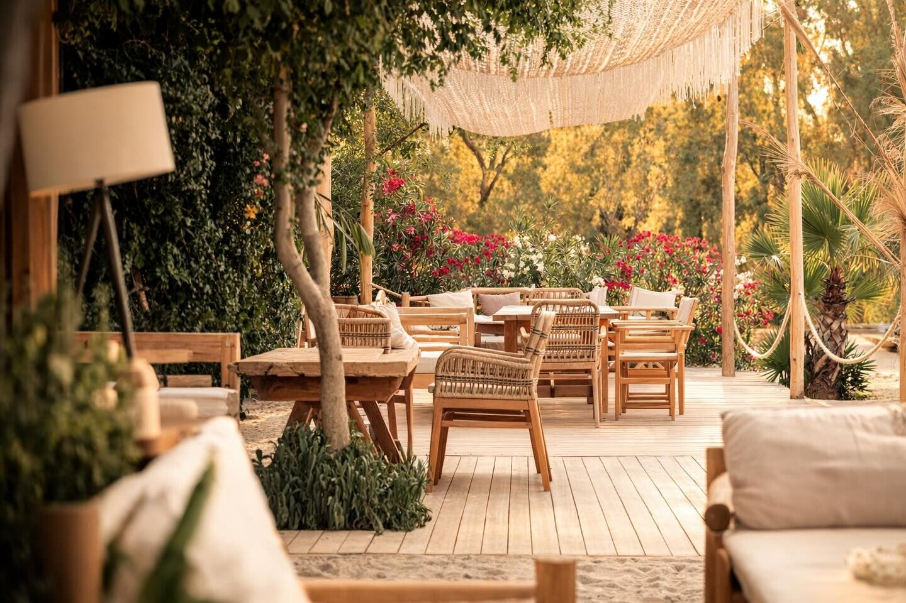
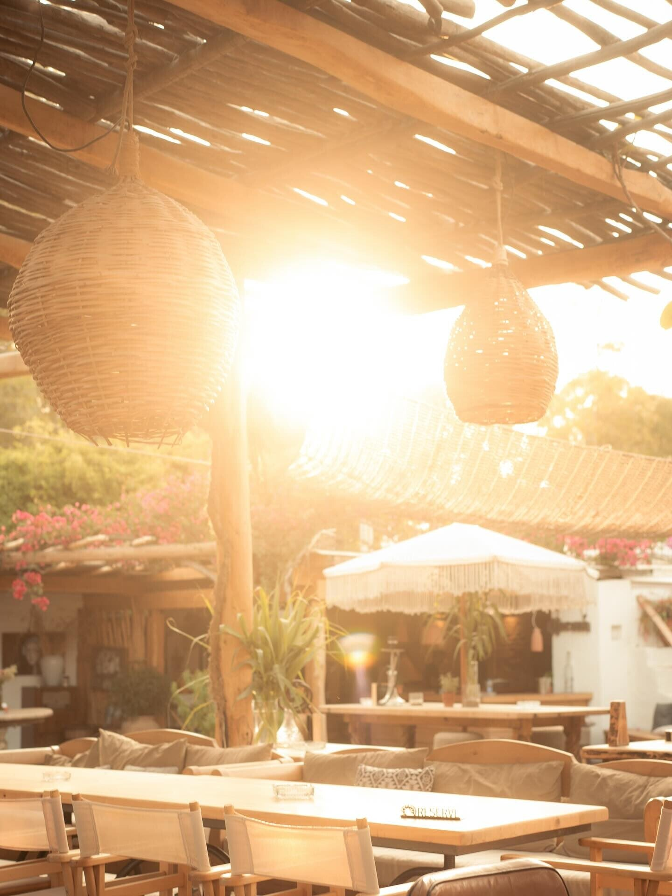
's avonds
Maar 's avonds transformeert het in een levendige lounge/club-vibe. Met ethnic chill-out beats overdag die overgaan in clubmuziek, live DJ's (internationaal en Grieks), bands en een diverse crowd van locals en van mensen die er als toerist zijn, wordt het een hotspot voor dansen onder de sterren tot in de vroege uurtjes.
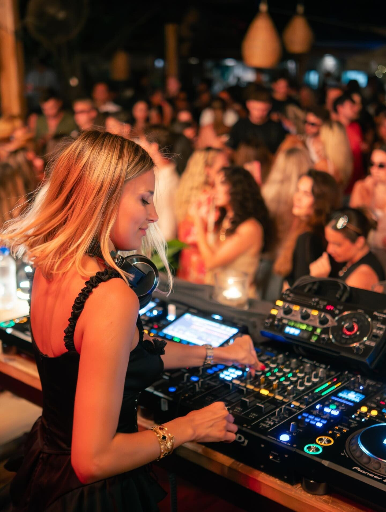
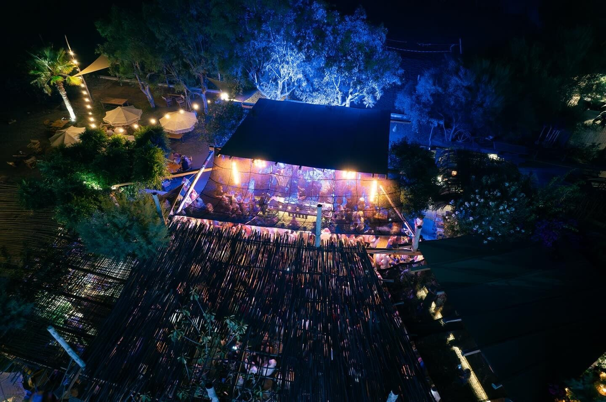
Full Moon Party
Bekend om speciale events zoals de maandelijkse Full Moon Party (de grootste beach party op Kos met bekende DJ's en bands), themafeesten en avonden vol energie. Perfect als je zin hebt in een mix van strandfeest en nachtleven zonder ver te hoeven lopen van de stad.
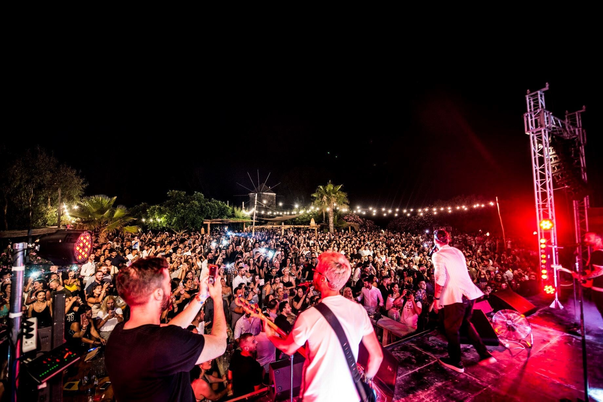
Bezoekers en locals dansen tot diep in de nacht onder de sterren, vooral tijdens speciale events, zoals de maandelijkse Full Moon Party. De grootste beach party van het eiland! lekkere bites en die unieke see-and-be-seen energie.
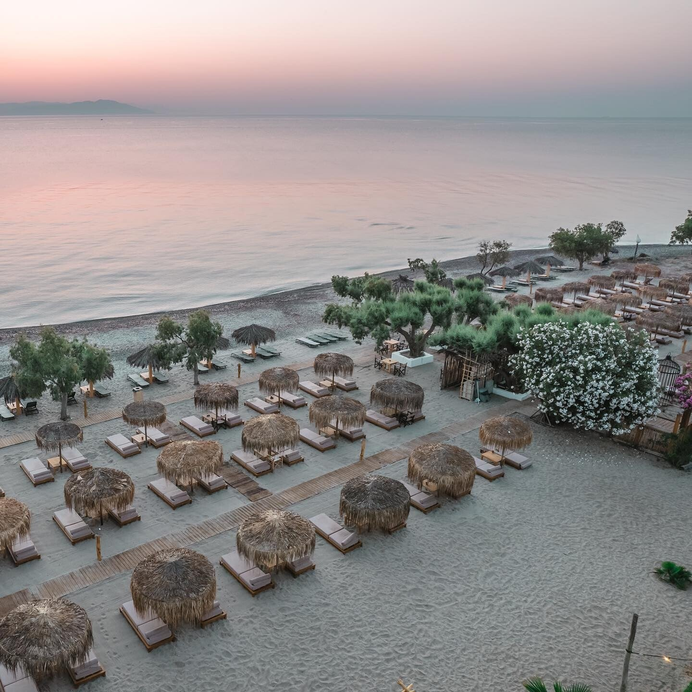
Stylish en Relaxed
De sfeer is stylish en relaxed, met fairy lights, zeezicht en een fijne mix van mensen – ideaal voor een avond die begint met cocktails bij zonsondergang en eindigt met dansen op het zand. Ga erheen als je van een unieke, party-ervaring houdt!
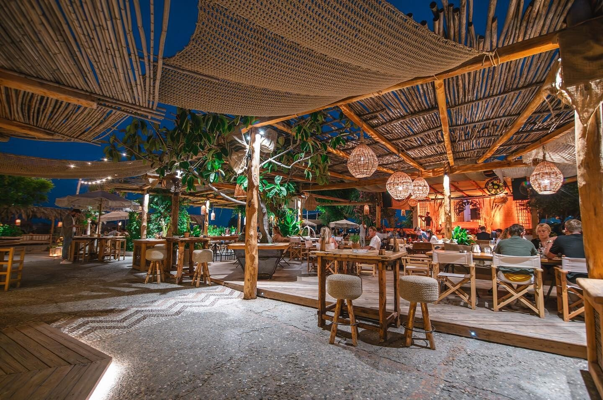
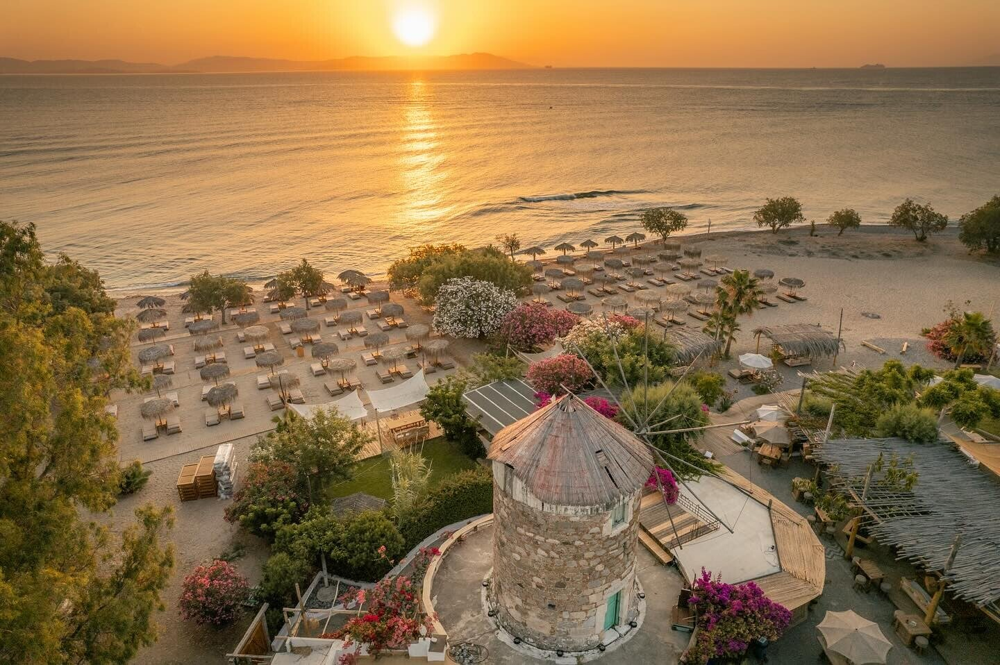
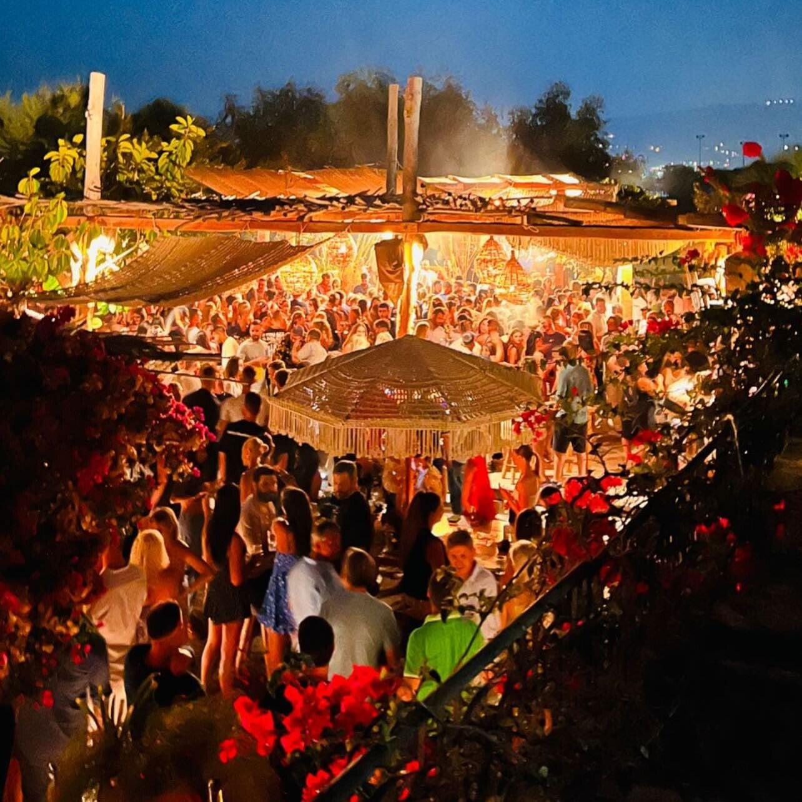
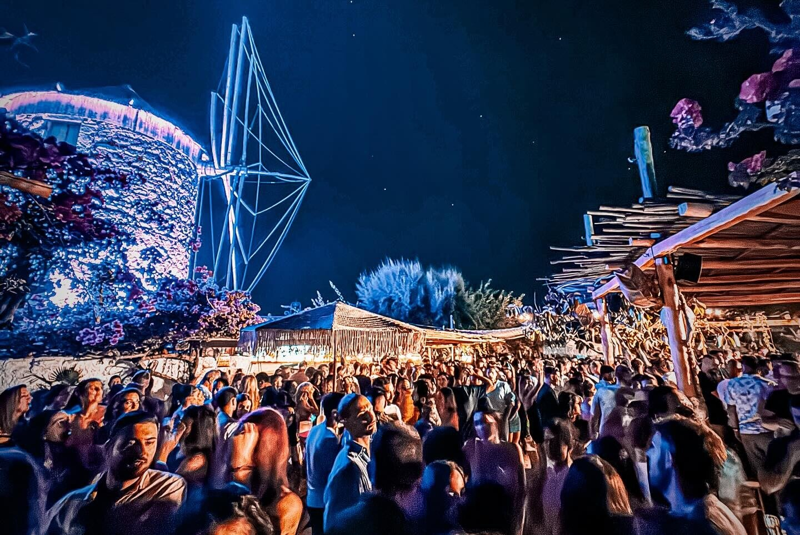